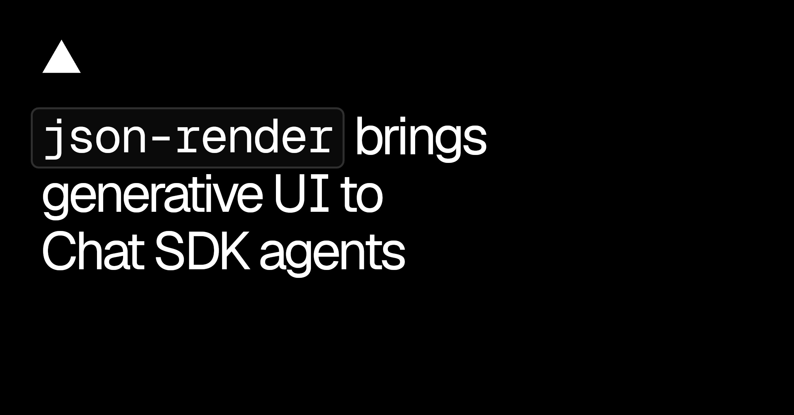
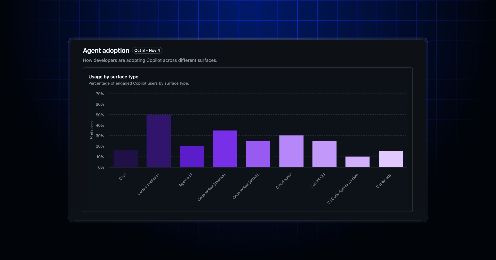

今天这些更新没有一个在比谁更会“生成”，都在补生成之后那堆不好看的活：选区要能点，卡片要能校验，临时项目要能自己消失，AI review 还得交代它看了什么、花了多少。
这比再多一个 prompt 框有意思。AI 进生产以后，设计团队真正缺的不是灵感，是边界、账本和清理机制。做不完这三件事，demo 越顺，后面越容易欠债。
Figma 的 Select Area 现在可以直接点图里的物体，自动把它选出来，再隔离或擦除，不用拿笔绕着边缘描一圈。目前只在 macOS 桌面端。
功能不大，位置很准。电商图、情绪板、提案合成里最烦的往往不是“生成一张”，而是把杯子、人物或一块材质从结果里捞出来继续改。还没实测毛发、半透明和反光边，先不替它把 Photoshop 判死刑。
Spline Arena 把同一个 prompt 同时交给两个 3D 模型，用户能绕场景看、平移，然后匿名投 A、B、平局或“两边都差”。排行榜用 Bradley–Terry 拟合，每个分数带置信区间；每天投够票还能领 AI credits。
这个比盯一张缩略图打分靠谱，但还不是生产 benchmark。模型在竞技场里赢，可能只是第一眼构图讨巧；拓扑、材质可改性、移动端性能和导出后的脏活都没进票箱。Arena 适合找候选，不适合替团队验收。

Vercel 把 json-render 接进 Chat SDK agent：先给模型一份有类型的组件目录，它再输出 JSON spec，卡片可在 Slack、Teams 里边生成边更新。默认最多每 500ms 刷一次，结束时做最终校验；属性不合规会抛 CardSpecError。
重点不是“聊天里也能画 UI”，而是模型没有资格随手发明组件。平台超限时 adapter 还能降级，比如 Slack 的第二张表会变成 code block，也可以直接用 limits 拒收。生成式界面想进业务，白名单和失败姿势比动画更重要。
vercel deploy --delete-project-after 1d 可以让新项目到期自动删除，支持 1h、1d、1w、2w、30d；反悔则用 vercel project keep。要升级到 CLI v65.12.0 以上。
有个边界别漏：这个 flag 只管本次创建的新项目，拿去部署已有项目只会收到 warning，不会偷偷改掉它的寿命。原型团队早该把“什么时候删”写进部署命令，别让一次提案在列表里住三年。
Vercel Tracing 正式 GA，所有套餐都能在 Dashboard 或 CLI 用 KQL 查 span 和 trace。Next.js 16.5 起，新建且包含 Node.js function 的项目会在首次成功构建后自动开 100% sampling；不想要，得把 sampling rule 删掉。
“所有套餐”不等于“都留 14 天”：Hobby 是 3 天，Pro 与 Enterprise 是 14 天。默认全采样对排查 demo 很爽，长期项目先看流量和隐私边界，再决定是不是一直开满。
GitHub 现在能通过 API 明确识别 Copilot 的 review 和 comment，还能回读 review effort，以及某条意见引用过哪些 skill、MCP server 和 custom instruction。review 总览也收紧了：跳过与排除的文件合并进 Files not reviewed，空区块不再占位，AI credits 会显示在 session 里。
这次补的是审计，不是聪明度。至少以后能回答“它为什么这么说、哪些文件根本没看、这轮花了多少”。但 enterprise / organization 设置接口不支持 GitHub Apps 和 fine-grained PAT，只有 repository 级接口支持，自动化前先把权限表看完。

Copilot impact dashboard 把 Chat 和 VS Code Agents window 加进 adoption 图，现在一共看九种使用面；原来的 Passive users 改名 Chat-first users。参与规则仍是 28 天里至少两天使用某功能，而且一个人可以同时落进多个 feature。
名字改对了，指标没变。Chat 和 VS Code Agents window 只算 feature engagement，不推动 adoption phase，API 里这批人仍叫 No Cohort。所以“大家都在聊天”不能直接翻译成“agent 已进交付”；这个区别最好原样留在周报里。
来源：Stash 制作解析https://www.stashmedia.tv/framestore-reindeer-take-flight-for-the-national-lottery/｜制作：Arts and Sciences × Framestore｜导演：Tim McNaughton
片子讲一只驯鹿往高处走，情绪不靠台词，靠步态、停顿和那点不肯退的劲。Framestore 在苏格兰高地拍了真实鹿群做运动参考，但没有图省事上自动 mocap；为了赶工期和守住表演，主角从头手 K。Houdini 再接肌肉、毛发、白气、雪和水，冬季数字环境按实拍里的岩石、树枝和地形往回对。
好看不在“鹿很真”，而在镜头一直知道自己要讲什么。前半段用远景把它压得很小，坡、风、雪都比主角大；越接近山顶，景别才慢慢收回来。CG 没有抢着证明毛发做了多少根，角色的犹豫和继续往前才是视觉中心。这种克制比满屏粒子贵，也更难。
做产品发布片时可以偷这套结构：先找一个能被动作表达的性格，不急着列功能。用三段位移讲清“遇阻—调整—继续”，再让材质、粒子和 UI 只服务这条动作线。没有动作线，技术 breakdown 越豪华，片子越像供应商 showreel。
CardSpecError 时会不会把卡片改得越来越保守。msJBau701rY 与 Stash 制作解析已核验，飞书使用 YouTube URL Preview。核验说明：Figma、Vercel、GitHub、Spline 与 Stash 官方页面于 2026-11-07 回读。正文 6 张配图原始宽度均为 1920–2400px，并逐张目视检查；视频原片为 YouTube 官方嵌入，飞书按 URL Preview 发布，不使用单独视频封面块。